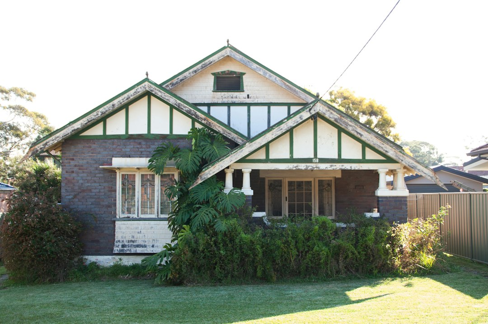

Home Loan Broker Near Me presents 5 provider types across Australia: home loan, first home buyer, refinance, investment loan, and construction and specialist lending brokers. The published process says users can describe a request in about 30 seconds, with no account and no obligation, then compare professionals who make contact. Treat broker choice as a fit check: loan purpose, lender access, fees, eligibility and availability should be confirmed directly before proceeding.
For borrowers comparing home loan brokers australia options, the useful starting point is not a national list by itself, but a clear view of loan purpose, broker category and questions to ask before sharing details.
Home Loan Brokers Australia Explained
Home Loan Broker Near Me is presented as a place to compare home loan brokers across Australia, browse cross-checked provider listings, read reviews, compare services and request quotes. That makes it most useful when you already know the broad lending task, such as buying, refinancing, investing, or seeking construction and specialist lending support.
The page separates broker search by provider type and location rather than treating every borrower as the same. That structure matters because a first home buyer question is different from a refinance question, and an investment lending conversation is different again. The published flow asks what service is needed first, then moves to the borrower details.
A sensible use of the page is to shortlist by category, then test whether each broker can explain their current lender access, eligibility approach, fee position and availability for your circumstances. The provider profiles shown on the page also encourage direct confirmation of lender access, eligibility, fees and availability, which is the right posture for a finance decision.
Who this applies to
This guide applies to borrowers who want a structured way to compare broker options before committing to a conversation. It is especially relevant if the task fits one of the listed categories: home loans, first home buyer brokers, refinance brokers, investment loan brokers, or construction and specialist lending.
- First home buyers can use the category label to find brokers who present that service area, then ask what documents, deposit evidence and approval steps are usually discussed.
- Refinancers can ask how a broker compares the current loan against alternatives, including fees, repayment structure and the borrower's reason for switching.
- Investors can keep the discussion focused on borrowing purpose, property strategy and repayment structure without assuming every residential broker works the same way.
- Construction or specialist borrowers should ask whether staged payments, property type, or more complex income details affect the broker's process.
The national page lists locations in every state and territory, including New South Wales, Victoria, Queensland, Western Australia, South Australia, Tasmania, the Australian Capital Territory and the Northern Territory. For a narrower city example, the Brisbane broker comparison guide shows how a location-specific page can sit beside the broader Australian view.
Questions to ask before requesting quotes
The cleanest broker comparison starts with a short brief. The published request flow asks whether the borrower is buying, refinancing or investing, and then asks for the service type. Before submitting, write down the property purpose, approximate timing, loan goal and any constraint that could change lender choice.
Useful questions include whether the broker works with the loan type you need, how they explain lender choice, what fees may apply, whether the lender pays them, and what information they require before giving meaningful guidance. If the broker advertises a category such as investment loans or construction lending, ask for the process rather than a promise.
For home loan brokers australia searches, avoid judging only on review count or location label. A profile can help start the comparison, but the next step is a direct conversation about your situation. ASIC Moneysmart publishes consumer guidance on home loans, and borrowers can use that kind of neutral source to prepare questions about repayments, loan features and affordability before talking to a broker.
How to read provider categories
The provider categories are not interchangeable labels. A general home loan broker may suit a straightforward purchase, while a refinance broker category is aimed at borrowers reviewing an existing loan. Investment loan brokers are more relevant where the borrowing purpose is tied to a rental or portfolio decision. Construction and specialist lending indicates a more complex brief, so the borrower should ask what extra information is needed.
Category labels should be treated as a sorting tool, not proof of suitability. The source page repeatedly prompts users to compare services and pricing, read reviews and contact providers directly. It also states that a request is free to submit and that there is no obligation to proceed.
When comparing profiles, keep a written note of the service category, the broker's stated coverage, whether the profile mentions the relevant lending purpose, and what the broker says when asked about fees and availability. That gives you a better comparison than a quick impression from a listing card.
Location and borrower fit across Australia
A national broker search can be useful where the main issue is category fit rather than walking distance. The page lists provider locations across Australian jurisdictions and also lets users browse by state. That is helpful for borrowers who want to start broadly, then narrow to a state, city, or suburb page where listings exist.
Locality still needs a reason. Use location filters when they affect the conversation, such as wanting a broker familiar with your state market, needing a provider who services your area, or comparing profiles in a city shown on the page. Do not assume a suburb label alone means the broker is right for a complex lending need.
The best next action is to compare a small number of relevant providers, ask the same questions of each, and keep records of answers about lender access, eligibility, fees and availability. For a financial commitment as large as a home loan, that discipline is more useful than chasing the longest list.
- Define the loan purpose. Decide whether the request is for buying, refinancing, investing, or construction and specialist lending before comparing profiles.
- Shortlist by category and location. Use the provider type and state or city pages to create a small list that matches the actual lending task.
- Ask the same questions. Check lender access, eligibility approach, fees, availability and process with each broker so the comparison is consistent.
- Review before proceeding. Compare the answers, read any available reviews and decide whether the broker's process fits your circumstances.
| Borrower situation | Relevant category to check | Main question to ask |
|---|---|---|
| Buying a home | Home Loan Brokers or First Home Buyer Brokers | What information do you need before comparing suitable loan options? |
| Reviewing an existing loan | Refinance Brokers | How do you compare the current loan against alternatives and switching costs? |
| Buying for investment | Investment Loan Brokers | How do you assess borrowing purpose, repayment structure and investment details? |
| Building or complex borrowing | Construction and Specialist Lending | What extra documents or staged finance details may be required? |
Common questions
Is the request process presented as free? Yes. The source page says it is free to submit a request, with no account and no obligation to proceed.
Which broker types are listed? The page lists home loan brokers, first home buyer brokers, refinance brokers, investment loan brokers, and construction and specialist lending.
Should I rely on a listing alone? No. Use a listing to start a shortlist, then contact the provider directly to confirm lender access, eligibility, fees and availability for your circumstances.
Can I compare brokers by location? Yes. The page includes location browsing across Australian states and territories, with specific city and suburb listings where available.
This guide covers how to compare Australian broker categories, location filters and borrower-fit questions before contacting providers.